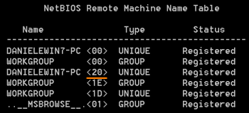
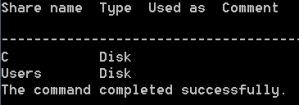
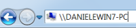

Windows standard tools
1. List the remote machine tablecommand that displays information about a target.
Record Type:<20> → identifies a
server service, this mean that the file sharing service is up and running on the machine
<00> → the machine is a workstation
Type:UNIQUE → the machine have only one IP address assigned
GROUP → name of the workgroup or the domain the computer is joined to
2. Enumerate the sharesOnce we know that a machine has the File Server service running (
<20>), we can enumerate the shares
3. Browser the shareConnect our machine with one of the previously share found
net use \\TableName\ShareName
Now we can browser the share from the Windows Explorer
4. Checking for Null Session vulnerabilitynet use \\<IP address>\IPC$ '' /u:''
net use \\
<IP address>\
IPC$ “” /u:"" This command establish a connection with the hidden share
IPC$ administrative share at the address
<IP address> by using a
null password and an
empty(anonymus) usernameThis test only works with the IPC$ administrative share not with others shares